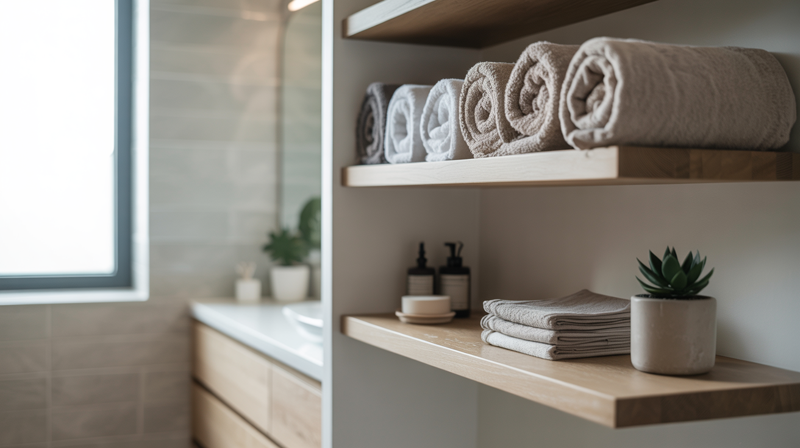

Bathroom storage gets solved with a cabinet purchase more often than it needs to.
A DIY shelf, built specifically for the space available, usually costs less and fits better than anything bought off the shelf.
This covers five actual builds, plus what matters before drilling into a bathroom wall specifically.

Common Mistakes to Avoid
Skipping the stud-finding step is the most common and most consequential mistake, risking a shelf that pulls away from the wall under real weight.
Choosing a material without considering the room's humidity is the second most common misstep, leading to warping or rust well before the shelf should need replacing.
What to Know Before Drilling
Finding the actual wall studs, rather than relying on drywall anchors alone, matters more for a shelf that will hold any real weight, including everyday bathroom items.
Bathroom humidity affects material choice more than in any other room, untreated wood and certain metals need a protective finish to avoid warping or rust over time.
Balancing genuine function with the look matters too; a beautiful shelf that can't hold what it needs to isn't actually solving the storage problem.
5 Bathroom Shelving Projects Worth Building
1. Rope Hanging Shelves
Shelves suspended by thick rope bring a relaxed, slightly bohemian look that a rigid bracket-mounted shelf can't replicate.
This project also tends to be one of the easier ones to adjust after installation, since the rope length can be modified without starting over.
2. Crate Shelves
Wooden crates mounted directly to the wall create instant cubby storage with real visual character, especially using reclaimed or vintage crates.
This is one of the more budget-friendly projects here, especially if the crates themselves are sourced secondhand.
3. An Over-the-Toilet Ladder Shelf
A ladder-style shelf claims the awkward, usually wasted space directly above the toilet, which is often the single biggest unused storage opportunity in a small bathroom.
This design also doesn't require drilling into the wall at all in most cases, making it one of the more rental-friendly projects on this list.
4. Industrial Pipe Shelving
Metal pipe fittings paired with wood shelving bring a sturdy, industrial-chic look that also happens to be genuinely durable in a humid room.
This project takes a bit more planning than a simple floating shelf, but the hardware itself requires no special skill to assemble.
5. Floating Wood Shelves
A simple wood plank mounted on hidden brackets creates a clean, minimal look that suits almost any bathroom style.
This is one of the most approachable builds on this list, requiring basic tools and a single afternoon.
Why DIY Is Worth It Here
A DIY shelf costs a fraction of a comparable store-bought unit, since the main expense is materials rather than labor or brand markup.
It also solves the small-bathroom problem directly, a custom-built shelf fits an odd nook or narrow wall in a way pre-made furniture often can't.
Why Bathroom Shelving Matters
A bathroom accumulates more small items, toiletries, towels, decor, than almost any other room its size, which makes real storage less optional than it is elsewhere.
Open shelving specifically also adds a styling opportunity that a closed cabinet doesn't.
Time to Grab That Drill
None of these five projects require advanced carpentry experience.
Start with whichever design fits the available wall space and the room's actual storage needs, and keep the stud-finding and humidity considerations in mind from the start.
A well-built DIY shelf solves real storage problems for less than most store-bought alternatives.